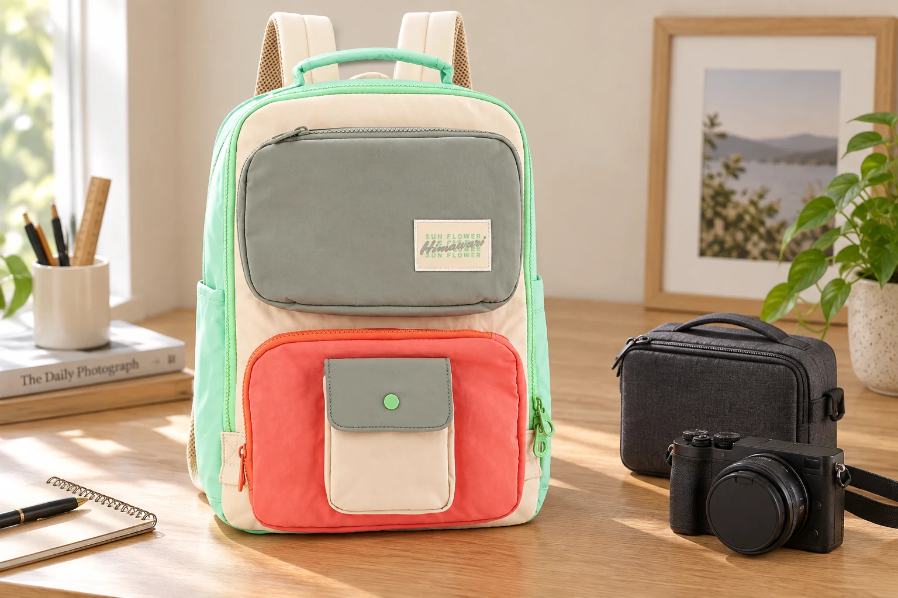
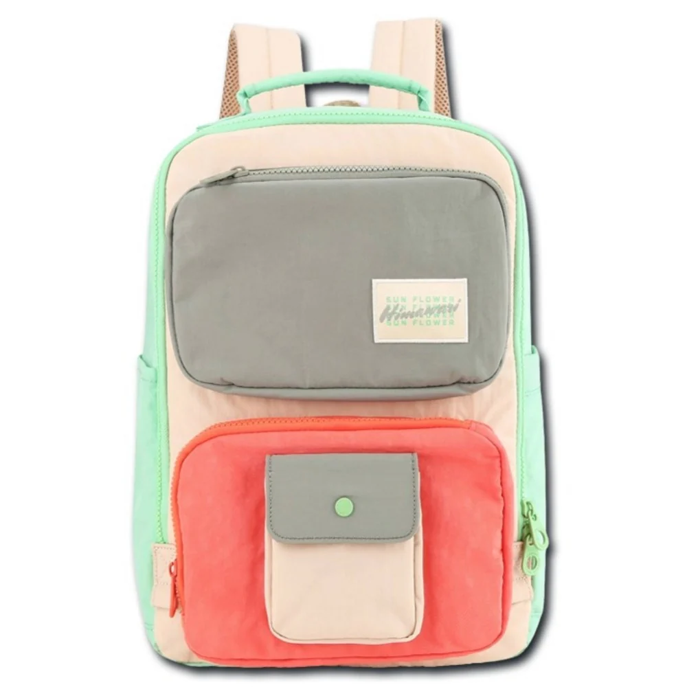

일상 백팩에 카메라를 더할 때 케이스부터 정하는 이유

평소 쓰는 백팩에 카메라 하나를 더하려면 먼저 이동할 때의 구성을 정해야 합니다. 카메라 본체만 놓고 본 크기와 렌즈, 후드, 스트랩을 붙인 모습은 다를 수 있습니다. 그 구성에 맞는 케이스를 준비한 뒤 가방을 선택하면 무엇을 비교할지 분명해집니다. 빈 공간에 기기를 먼저 넣어보고 나중에 보호 방법을 맞추는 순서로 서두르지 않습니다.
카메라와 케이스의 안내에서 이동·보관하는 방법을 확인합니다. 렌즈를 붙인 채 보관할 수 있는지 분리해야 하는지 해당 조합을 기준으로 봅니다. 같은 모양의 카메라가 다른 케이스에 들어간다고 사용하는 장비에도 그대로 맞는다고 생각하지 않습니다. 오늘 가져갈 렌즈와 소품을 실제로 놓아보면 가방에서 필요한 위치를 정하기 쉽습니다.
가방에 맞추기 전에 이동할 구성
출발 전에는 장착한 부품과 별도로 가져갈 소품을 나눕니다. 추가 렌즈나 배터리를 가져가면 하나의 카메라만 담을 때와 준비가 달라집니다. 어떤 소품이 필요한지는 촬영 일정과 기기 안내를 따릅니다. 모두 가져가야 할 이유가 없다면 오늘 사용할 구성부터 고르고, 필요한 보호 케이스와 닫힌 상태를 살펴봅니다.
비교할 크기는 케이스를 닫은 모습입니다. 손잡이나 여밈 부품이 밖으로 나와 있다면 그 부분도 실제 배치에 들어갑니다. 백팩의 바깥 숫자가 더 커 보인다는 이유만으로 들어갈 것을 확정하지 않습니다. 가지고 있는 가방이라면 빈 케이스부터 넣고 꺼내보며 입구와 안쪽에 걸리는 곳을 확인할 수 있습니다.
가방을 고르기 전에 문의할 경우에는 케이스의 크기와 함께 담을 물건을 설명합니다. 카메라 이름만 보내면 렌즈를 어떻게 붙이는지나 케이스를 어떤 방향으로 여는지까지 전달되지 않을 수 있습니다. 궁금한 항목을 구체적으로 적어야 필요한 답을 받기 쉽습니다. 안내된 치수가 어떤 공간을 잰 값인지도 함께 확인합니다.
이 글에 소개하는 Himawari No.8029 제품 정보는 일상용 가방을 계속 쓸지 살펴볼 자료입니다. 케이스를 먼저 정하고 나면 오늘의 다른 짐과 함께 넣고 꺼낼 순서를 비교할 수 있습니다. 책이나 개인 소지품을 찾을 때마다 카메라를 빼야 한다면 묶음을 다시 나누어보세요. 장비 구성이 많아지는 날에는 그 구성에 맞는 다른 운반 방법도 검토할 수 있습니다.

다른 짐 사이에서 케이스가 놓일 자리
케이스를 넣은 뒤 주변 물건이 어떻게 맞닿는지 살펴봅니다. 책 모서리와 열쇠처럼 단단한 물건을 직접 기기에 닿게 두지 않고 각 보관 방법을 따릅니다. 옷으로 둘러싼 모양과 기기에 맞는 케이스의 사용은 구분해야 합니다. 보호 수준은 해당 케이스의 안내로 확인하고 어떤 물건을 위에 놓을 수 있는지도 임의로 판단하지 않습니다.
가방을 닫을 때 케이스를 눌러야 한다면 다른 짐의 위치를 바꾸거나 총량을 줄일 수 있습니다. 자연스럽게 닫히는지와 케이스를 꺼낼 공간이 있는지는 각각 봅니다. 안쪽에 들어갔지만 다시 꺼내려면 다른 물건을 전부 쏟아야 한다면 짧은 촬영에 쓰기 번거로울 수 있습니다. 출발 전에 넣고 빼는 실제 동작을 확인하세요.
케이스의 여는 방향도 함께 정합니다. 가방 안에서 열 수 있는지, 밖으로 꺼낸 뒤 열어야 하는지는 제품 안내와 실제 배치를 기준으로 봅니다. 그 방향에 열쇠나 연결선이 놓여 있으면 먼저 정리합니다. 작은 소품을 케이스의 남는 틈에 임의로 밀어 넣는 대신 원래 수납과 보관 안내에 맞춰 둡니다.
물병이나 젖은 물건을 함께 가져간다면 별도의 위치를 정합니다. 케이스를 썼다는 이유로 어떤 내용물과 함께 담아도 된다고 생각하지 않습니다. 가방이나 케이스의 성능 표현을 다른 장비의 보호 등급으로 바꾸어 읽지 않습니다. 실제로 필요한 보호 조건은 기기와 케이스의 안내에서 확인하고 그 범위에 맞는 이동 방법을 선택합니다.
촬영 전후를 한 번 이어보기
촬영할 때는 멈추어 가방을 안정적으로 둘 수 있는 자리를 찾습니다. 한쪽 어깨에 걸친 채 기기를 꺼내기보다 가방과 케이스를 순서대로 여는 동작을 준비할 수 있습니다. 카메라를 손으로 받친 뒤 케이스에서 꺼내고 스트랩은 기기의 설명에 맞게 사용합니다. 촬영 장소의 안내가 있으면 따르고 주변 사람의 이동을 막지 않습니다.
찍고 나서 다시 이동할 때는 카메라의 사용을 마친 뒤 보관합니다. 렌즈 캡과 기기 상태, 케이스 여밈, 가방의 열린 칸을 차례로 확인할 수 있습니다. 어떤 순서가 필요한지는 실제 기기의 안내와 사용한 구성에 따릅니다. 급히 이동할 일이 생길수록 손에 무엇이 남아 있는지 보고 기기를 정리한 뒤 움직입니다.
촬영을 여러 번 반복할 계획이라면 그 횟수만큼 실제로 넣고 꺼내보세요. 길게 이동할 때 괜찮았던 배치가 자주 여는 상황에서도 편한지는 별도의 선택입니다. 다른 짐을 자꾸 옮기게 된다면 카메라를 둘 위치나 가방 선택을 다시 생각할 수 있습니다. 필요한 장비를 줄일 수 없는 일정이면 억지로 일상 배치를 유지할 필요는 없습니다.
귀가 뒤에는 사용한 구성을 꺼내 각 제품의 안내대로 정리합니다. 다음 촬영을 위한 기록에는 넣기 어려웠던 부분과 꺼낼 때 옮겼던 물건을 남길 수 있습니다. 실제로 쓴 렌즈와 소품을 기준으로 다음 짐을 고르세요. 케이스를 닫은 상태에서 가방에 놓는 것부터 촬영 뒤 다시 보관하는 것까지 이어지는 방법이 오늘의 선택 자료가 됩니다.